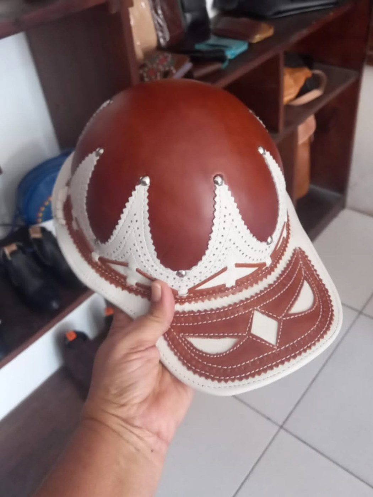
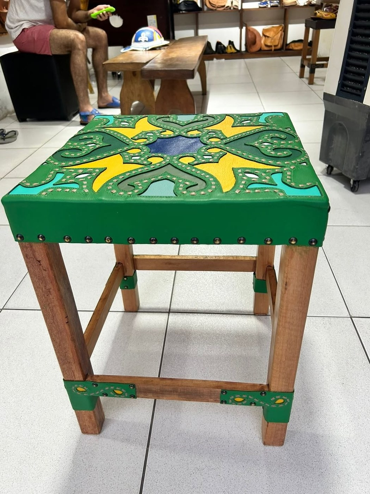
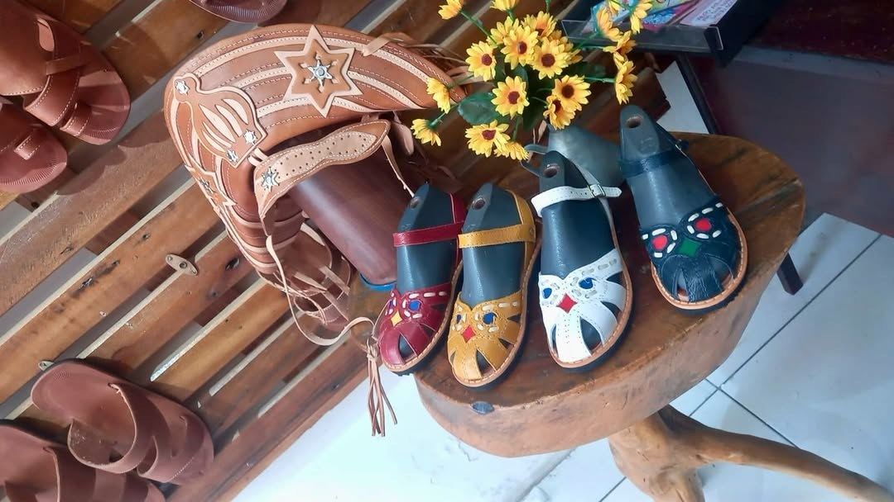

Mestre Seu Neném
O couro sertanejo costurado em bolsas, cintos, calçados e memória familiar.
José Eufrásio Filho, Mestre Seu Neném, aprendeu com o pai e entrou ainda criança na confecção de artigos em couro, criando calçados, bolsas e cintos.
José Eufrásio Filho, Mestre Seu Neném, é natural de Serra Talhada, em Pernambuco.
Aprendiz do pai, começou a trabalhar com couro aos oito anos. O aprendizado familiar aparece como eixo de sua história: antes de ser produto, o couro é uma transmissão de saber entre gerações.
Sua produção ganhou reconhecimento em artigos como calçados, bolsas e cintos — peças ligadas à vida cotidiana, ao vestir e à identidade sertaneja.
Cada costura guarda um aprendizado recebido em família.
Para observar na peça
- Acabamento das bordas
- Desenho funcional das peças
- Relação entre uso cotidiano e estética
- Memória do couro no sertão
Materiais e técnica
Galeria de peças e referências de estilo
Obras e peças públicas reunidas para reconhecer linguagem, materiais e técnica. As peças da exposição são vistas apenas ao vivo.



Fontes e créditos
- Governo de Pernambuco — Mestre Seu Neném | Alameda dos Mestres https://www.youtube.com/watch?v=VNQfYifN__U